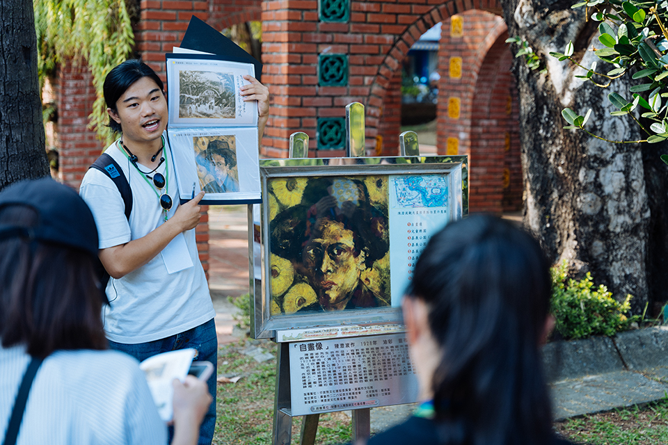
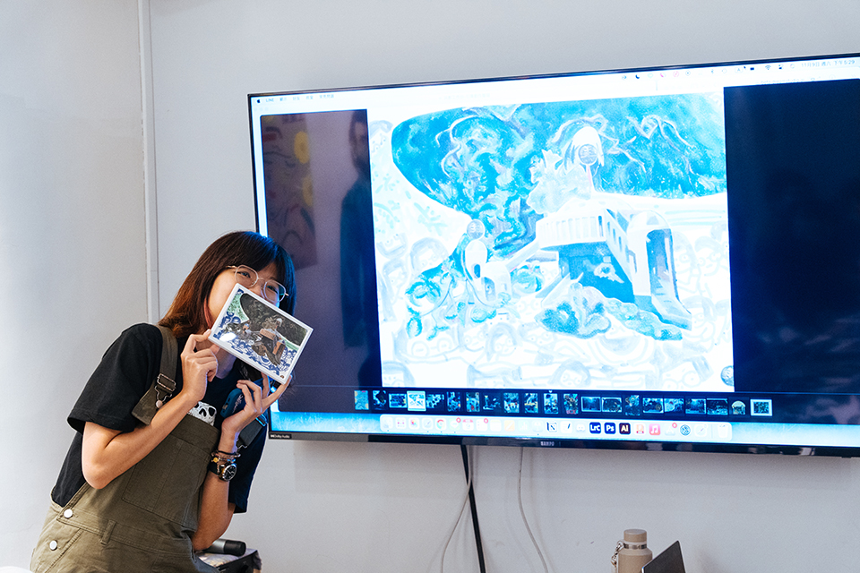

揪踅街 roaming
向日葵還是土鳳梨：陳澄波視角的當代詮釋
「向日葵還是土鳳梨」 由壹玖參零藝術整合工作室帶領參與者穿越時空、回到嘉義公園的歷史脈絡中，重新認識陳澄波及其作品中隱含的時代背景與文化意涵。本次活動透過藝術共創的形式，以創新角度結合過往與現代，探討「記憶」、「點子」和「觀點」如何形塑我們對土地的認識與情感。

嘉義公園見證了時代更迭，也成為陳澄波畫筆下的經典場景，承載著台灣歷史、自然與人文的記憶。參與者將在活動中跟隨藝術家當年的視角，感受當時公園中的生活氛圍，並觀察現代公園中樹木、路燈、人群的變遷，思考其如何折射出時代的不同風貌。從人們遛狗、孩童嬉戲到遊客休憩等日常場景中，逐步探索現代嘉義市民的生活脈動，並在這段藝術走讀中找到屬於自己的連結與啟發。

活動特別增加AI圖像生成技術，參與者將以此為輔助，重新詮釋陳澄波畫作中的視角與意境，進行即時的視覺創作。透過這種科技與藝術的結合，參與者不僅將見證藝術品的再現過程，也能藉由自己的創意與視角，與藝術家進行跨時空的對話，深入體驗這片土地的文化厚度。

「向日葵還是土鳳梨」旨在引導大眾以全新方式認識嘉義的歷史和陳澄波的藝術，探索個人觀點如何融入台灣歷史的長河中。透過這次活動，參與者將在共創中發現自身對於文化記憶的認同，並共同開創出與這片土地對話的嶄新可能性。
指導單位｜嘉義市政府智慧科技處、火箭人實驗室 Launcher Lab
主辦單位｜壹玖參零藝術整合工作室
共創設計師｜史芳、黃昱凱、鄭筑薇、廖勁智
特別感謝｜財團法人陳澄波文化基金會、台灣圖書室、施智臏